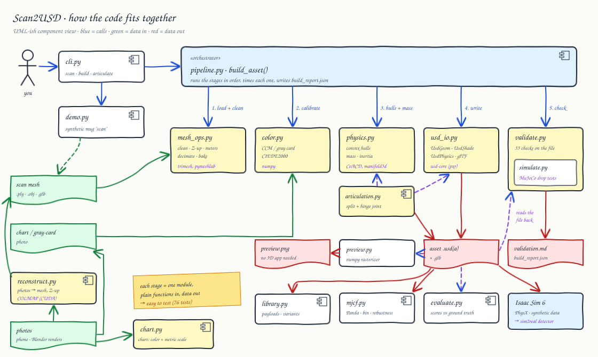
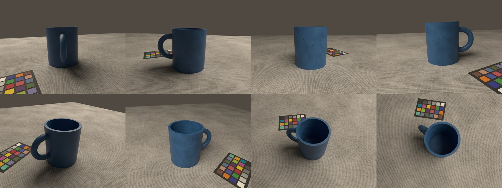
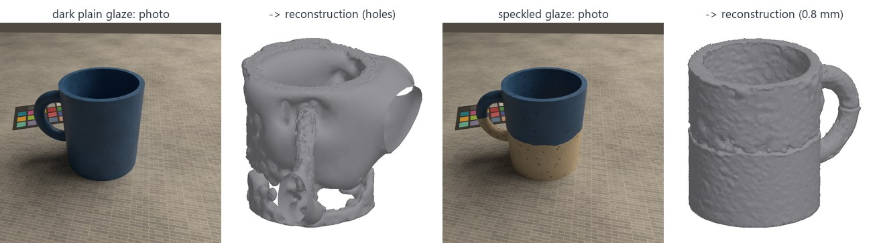
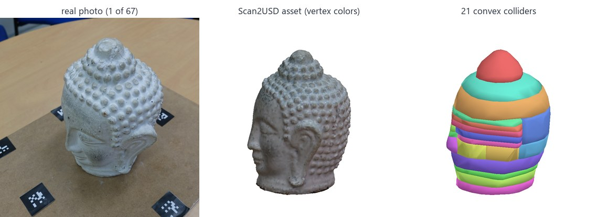
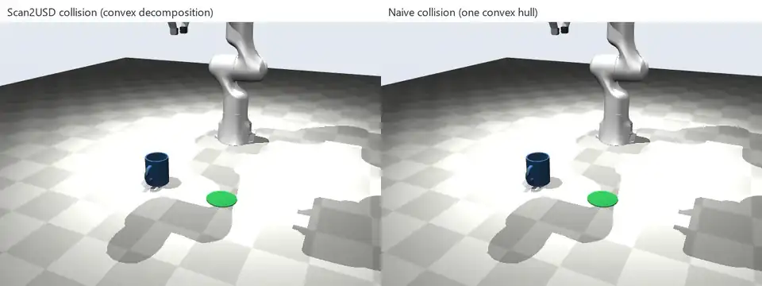
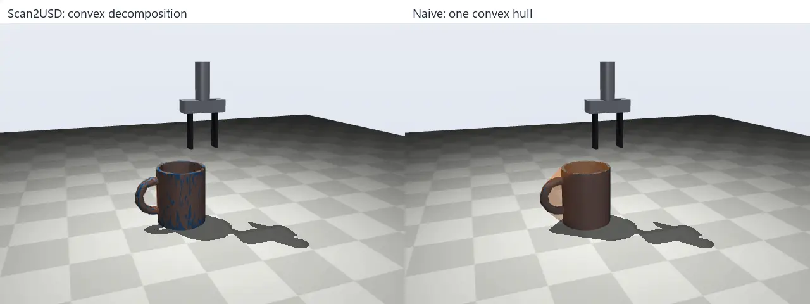
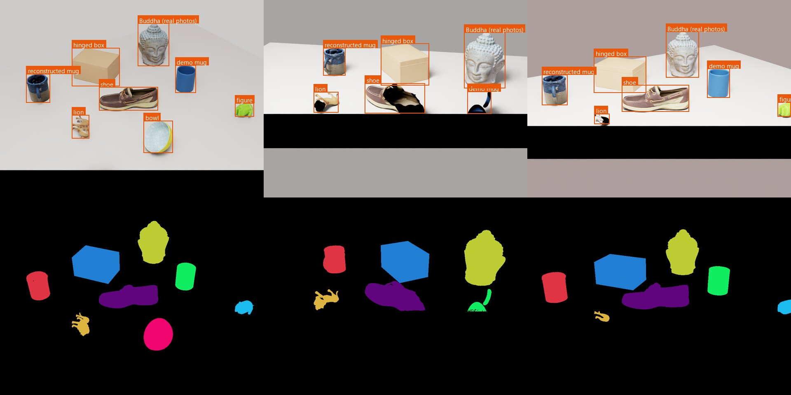
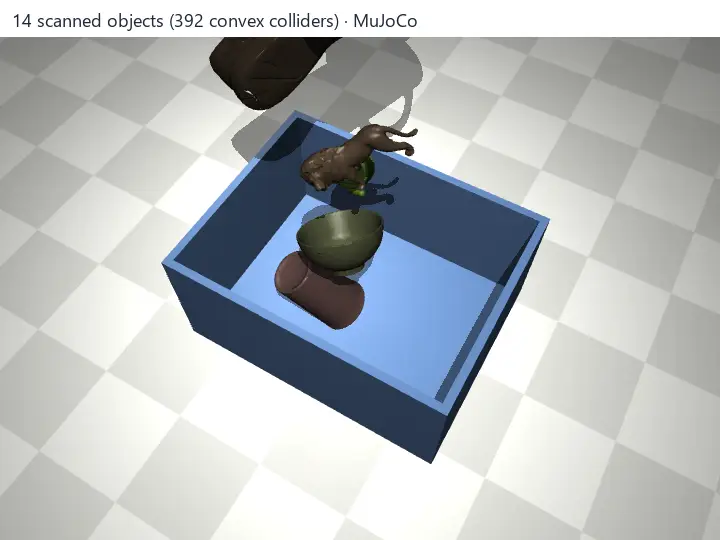
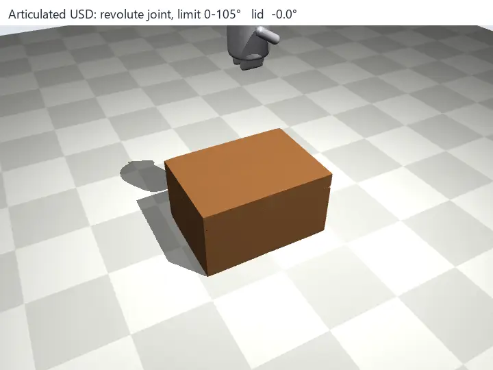
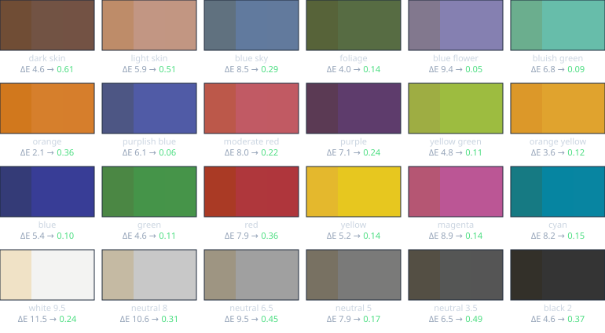

Phone photos in, physics-ready OpenUSD assets out, verified in NVIDIA Isaac Sim and MuJoCo.

Photos become a mesh (COLMAP), the pipeline turns it into a simulation asset, and the validator re-opens the written file. Downstream: MuJoCo demos, Isaac Sim, and scoring against ground truth.
Clean, color-calibrate, collide, weigh, export, validate.
COLMAP reconstruction, table removal, scoring on synthetic captures. Waiting on your phone photos.
Split a scan into parts, USD revolute joint with limits.
Isaac Sim 6 PhysX + Replicator dataset; MuJoCo grasp, bin, hinge.
Real captures, video, public repo, resume line.

A fake phone capture rendered in Blender: 78 photos in 3 rings plus top views, warm light, ColorChecker in the scene, known camera poses and shape.

Same mug, two glazes. Photogrammetry needs surface texture: the plain dark glaze leaves holes; the speckled one reconstructs to 0.8 mm.

All 67 photos registered; the marker board was removed automatically; a watertight 20 cm head with 21 convex colliders (scale assumed, as the dataset gives no size). scan2usd scan runs the whole thing in one command.
| Object | Accuracy mean / p95 (mm) | Completeness mean (mm) | F-score @2 mm | F-score @2 mm, above base | Volume error | Chart ΔE2000 |
|---|---|---|---|---|---|---|
| Speckled stoneware mug (procedural) | 0.78 / 2.87 | 0.64 | 0.934 | 0.921 | +11.8% | 7.6 → 1.31 |
| Printed coffee mug | 2.00 / 10.20 | 2.38 | 0.731 | 0.748 | +191.5% | 8.0 → 1.30 |
| Ceramic bowl | 3.03 / 9.61 | 2.34 | 0.494 | 0.524 | +82.0% | 7.8 → 1.32 |
| Android figure toy* | 0.78 / 3.08 | 0.96 | 0.872 | 0.894 | +1.4% | 7.7 → 1.38 |
| Lion figure | 0.60 / 2.41 | 0.62 | 0.941 | 0.935 | +8.2% | 8.0 → 1.29 |
| Boat shoe | 1.73 / 7.20 | 2.53 | 0.747 | 0.739 | +32.2% | 8.9 → 1.31 |
--mass, more top-down photos into cavities, and (future) visibility-based carving.Each object: 78 rendered photos → COLMAP → Scan2USD with one ruler measurement (height). Accuracy = reconstruction to true surface; F-score = share of both surfaces within 2 mm. Ground truth: Google Scanned Objects (CC-BY 4.0) and a procedural mug. *The GSO model id says "Triceratops" but contains an Android figure.

A real robot model rim-grasps the scanned mug (one finger inside), lifts it 14 cm and places it 25 cm away on the green target (11 mm error). Right: with a single convex hull the inner finger hits a phantom "lid" and the pick fails.

Same comparison with a simple two-finger gripper: 25 convex pieces lift the mug 11.6 cm, one convex hull 0 cm.

All 9 assets (incl. the real-photo Buddha) referenced unmodified, settled by PhysX, then rendered with random cameras and lights: RGB, tight 2D boxes, segmentation, depth (12 frames in 9 s).

14 objects, 392 convex colliders: all end in the tote and settle; resting penetration 0.08 mm.

One closed scan + a seam plane + a hinge line → base and lid with a USD revolute joint (0–105°). The lid opens, a scanned toy drops in, the lid closes.

Each patch: as captured · corrected · reference, with ΔE2000.
| Reference | ΔE2000 | Cost |
|---|---|---|
| none | 6.7 | – |
| white paper | 3.8 | free |
| 18% gray card | 1.7 | ≈ $10 |
| ColorChecker | 0.2 | ≈ $60–110 |
Below about 2 is hard to notice. In the full photo-to-USD runs, chart error drops from ~8 to ~1.3 (JPEG, uneven light).
Structure from motion matches features across photos and solves every camera's position. Multi-view stereo then estimates depth per pixel and fuses millions of colored points. A Poisson solve turns the points into a closed surface.
reconstruct.py · table plane → Z-up; object kept as the densest footprint above the table
Accuracy: how far the built surface is from the truth. Completeness: how much of the truth was captured. F-score at τ combines both: the share of each surface within τ (2 mm here) of the other. These are the standard metrics of the DTU and Tanks & Temples benchmarks.
evaluate.py · yaw search + ICP alignment, then point-to-surface distances
A 3×3 matrix maps the camera's colors of known chart patches to their true values in linear light; it's then applied to the scan's albedo. ΔE2000 ≈ 1 is just noticeable.
color.py
Photogrammetry alone can't tell a mug from a giant mug: its scale is arbitrary. The ColorChecker's patches are a known distance apart (16 mm on the Mini), so the pipeline finds the chart in many photos, triangulates its 24 patch centers with the solved cameras, and reads off meters per unit. RANSAC drops misdetections. On the benchmark: 0.35–1.43% error.
chart.py · scan2usd scan --chart-pitch-mm 16
Physics engines collide convex shapes quickly. One hull around a mug fills its cavity; CoACD splits it into pieces that keep the opening, so fingers and objects can go inside.
physics.py
Mass needs a closed solid. Scans often have holes, so the pipeline voxelizes the surface, closes small gaps, and fills enclosed space; open cavities (bowls, cups) stay empty. Example: bowl 322 g (hull estimate) → 192 g.
physics.voxel_solid
Each part is its own rigid body; a UsdPhysics.RevoluteJoint joins them with a hinge axis and angle limits, under an ArticulationRootAPI so PhysX solves them as one mechanism.
articulation.py · scan2usd articulate
Robots learn perception from labeled images. Simulators render perfect labels for free; randomizing cameras and lighting (domain randomization) helps the model transfer to the real world.
scripts/isaac_demo.py
scan2usd scan photos\ -o out\ --chart-pitch-mm 16 --mass 0.36 --material ceramic (photos → USD in one step; measure your chart's patch spacing once)data\raw\<object>\ (git-ignored).